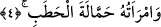

birkaç gün sonra bu işi yapan iki kişiyi yakaladılar. Ve onları orada asarak idâm ettiler.
O gün bugün bu iki kişinin kabri taşa tutula gelmiştir.
3. O, alevli bir ateşte yanacak.
“O” şüphesiz “alevli” yanan, parlayan büyük “bir ateşe girecektir.”
Yukarıda zikredilen cezâ, O’nun dünyadaki cezâsıdır. Öldükten sonra dirilince de hiç
şüphesiz o alevli, parlak ve büyük bir ateşe girecektir. Bu ateş, cehennnem ateşidir.
Bu âyet, meşhûr olduğu üzere, onun aslâ îmân etmeyeceğini bildiren kesin bir delil
değildir. Ta ki, “Kur’ân’a îmân ile mükellef kılınışı, aslâ îmân etmeyeceği gerçeğine
inanması ile mükellef tutulduğu” sonucunu doğurmasın. Çünkü böye bir durumda, Ebû
Leheb iki çelişik ve zıt durumu birleştirmekle mükellef tutulmuş olur.[258]
Ateşe girmek kâfirlere mahsus değildir. Ebû Leheb bu ifâdeden, Cehenneme giriş
sebebinin inkârı değil, fâsıklığı ve mâsiyetleri olduğu sonucunu çıkarabilir. Bu
durumda, “Ebû Leheb’in mükellef kılındığı husus, Rasûlullah (s.a.) Efendimiz’in
getirdiklerine icmâlen inanmasıdır, yoksa Kur’ân’ın getirdiklerine bütün ayrıntısı ile
îmân etmesi değildir ki, kendisinin sürekli îmân etmeyeceği gerçeğine îmânla mükellef
tutulmuş olsun!” şeklindeki meşhûr cevâba baş vurmaya hiç gerek kalmaz.
4. Odun taşıyıcı olarak karısı da (ateşe girecek).
Yâni onun karısı da gelir ve Cehennem ateşine girer.
Ebû Leheb’in karısı, Harb b. Ümeyye’nin kızı Ümmü Cemîl’dir. Ümmü Cemîl, Ebû
Süfyân’ın kız kardeşi olup Muâviye’nin halasıydı. İsmi Avrâ idi. O, Rasûlullah (s.a.) ile
komşuluk etmişti. Diken, pıtrak ve demir dikeni gibi bir bitkiden oluşan koca demetleri
getirir, geceleri Rasûlullah (s.a.) Efendimiz’in yoluna yayardı. -Neûzü billâh (Allah’a
sığınırız)-, ayağına batsın ya da eteğine dolaşsın diye yoluna diken koyardı. Allah
Rasûlü (s.a.) onlara, tıpkı ipeğe basar gibi basardı.
Ebû Leys tefsirinde diyor ki; “Bu kadının yaptıkları sebebiyle Rasûlullah (s.a.) ve
ashâbı büyük sıkıntı ve zorluklara mâruz kaldılar.
Kâşifî Tefsiri’nde şöyle denir: Rasûlullah (s.a.) namazdan döndüğünde onları yolunun
üzerinde diken ve pislik saçarken yakalar ve yumuşak bir üslûpla: “Siz nasıl bir
komşuluk yapıyorsunuz böyle?” buyururlardı.
Senin gül bahçesi yanağında gül açıldığından,